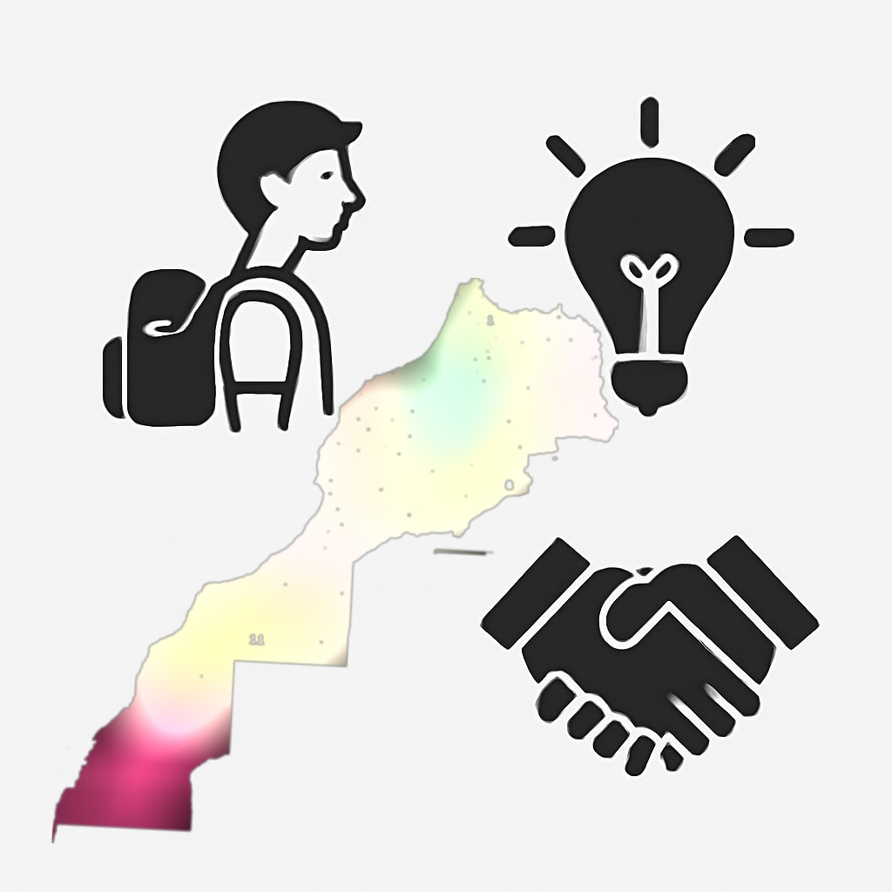

أرخص طرق لحجز تذكرة سفر إلى المغرب - دليل صيف 2025
مع اقتراب موسم الصيف، يبحث الآلاف من المغاربة المقيمين في الخارج عن طرق ذكية لحجز تذكرة طيران بأرخص سعر ممكن. في هذا المقال، نقدم لك كل النصائح العملية لتوفير المال والوصول إلى المغرب بأفضل تجربة ممكنة.
1. استخدم محركات البحث المتخصصة في الطيران
أشهر المواقع التي ننصح بها:
تقوم هذه المواقع بمقارنة الأسعار من مئات شركات الطيران، وتعرض أرخص التواريخ للسفر.
2. اختر التوقيت المناسب للحجز
الحجز في أيام الثلاثاء أو الأربعاء غالبًا ما يكون أرخص من نهاية الأسبوع. أيضًا، كلما حجزت قبل الرحلة بأسابيع، زادت فرصة الحصول على سعر منخفض.
3. السفر إلى مدن أقل ازدحامًا
السفر إلى مراكش أو أغادير أو الناظور قد يكون أرخص من الدار البيضاء أو الرباط. استخدم ميزة البحث "إلى المغرب" بدلًا من مدينة واحدة فقط.
4. استفد من العروض الخاصة
شركات مثل Ryanair وRoyal Air Maroc تنشر عروض موسمية. تابع صفحاتهم الرسمية واشترك في النشرات البريدية.
5. لا تهمل السكن والنقل الداخلي
مواقع مثل Booking.com وAirbnb تساعدك في حجز الإقامة مسبقًا بأسعار مخفضة.
أيضًا، استكشف عروض الحافلات أو القطارات داخل المغرب بدلًا من الطاكسي لتوفير إضافي.
كيف تبدأ مشروعًا رقميًا صغيرًا من المغرب؟
في ظل التطور الرقمي، أصبح بإمكان أي شاب مغربي أن يطلق مشروعه الرقمي الخاص من المنزل. في هذا الدليل سنرشدك إلى الخطوات الأساسية للبدء.
1. حدد فكرة المشروع
هل تريد بيع منتج؟ تقديم خدمة؟ أم إنشاء محتوى؟ حدد المجال الذي يناسب مهاراتك واهتماماتك.
2. اختر منصة العمل
3. أنشئ علامة تجارية بسيطة
اختر اسمًا سهلًا، أنشئ شعارًا (يمكنك استخدام Canva)، وكن متناسقًا في الألوان والخطوط.
4. قم بالتسويق الذكي
ابدأ بالنشر على السوشيال ميديا، تفاعل مع الجمهور، واستخدم أدوات مجانية مثل Meta Business Suite.
نصيحة ختامية:
لا تنتظر الكمال، ابدأ اليوم وطور مشروعك تدريجيًا!
أفضل 5 مهارات رقمية مطلوبة في 2025
السوق الرقمي يتغير بسرعة، لكن بعض المهارات تظل الأكثر طلبًا من قبل الشركات وأرباب المشاريع. إليك أهم 5 مهارات يجب أن تتعلمها.
1. تحليل البيانات
القدرة على قراءة وفهم البيانات باستخدام أدوات مثل Excel، Google Data Studio أو Python.
2. التصميم الجرافيكي
مهارة مطلوبة في كل مشروع. برامج مثل Canva، Adobe Illustrator، وFigma تمنحك أدوات قوية.
3. تحرير الفيديو
مع انفجار محتوى TikTok وInstagram، أصبح من الضروري معرفة المونتاج بتطبيقات مثل CapCut أو Premiere.
4. التسويق عبر محركات البحث (SEO)
تعلم كيف تجعل المواقع والمقالات تظهر في نتائج Google الأولى.
5. البرمجة وتطوير الويب
حتى المعرفة الأساسية بـ HTML, CSS و JavaScript تفتح لك أبواب العمل الحر.
ابدأ بتعلم واحدة منها اليوم، وادخر وقتًا يوميًا للتطبيق العملي!